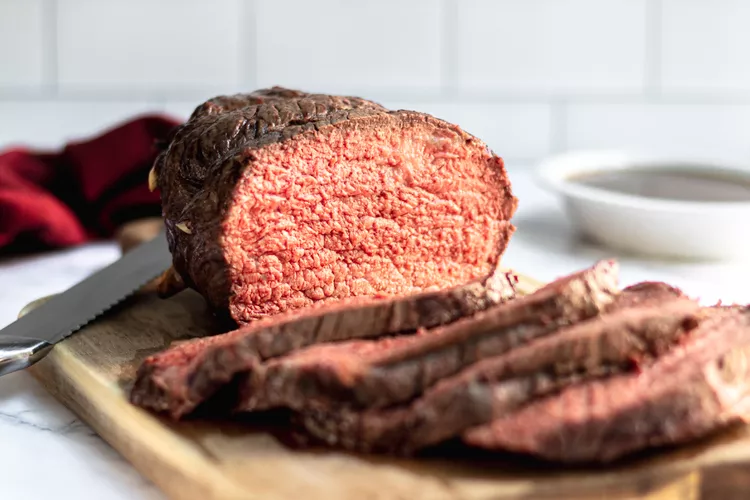

The Best nyama choma

Ingredients
- 3 to 3 1/2 pounds(1.3 to 1.6 kg) boneless rump roast (pick an end cut with a layer of fat, if you can)
- 1 tablespoon extra virgin olive oil
- 8-10 slivers garlic (3 to 4 cloves, sliced in half or into thirds)
- Salt and pepper
Steps
- Salt the roast and let it come to room temp
- Preheat the oven to 375°F
- Insert slivers of garlic into the roast
- Rub the roast with olive oil, then season
- Put the roast on the rack with a pan below
- Brown at 375°F, then lower the heat to 225°F
- Roast to an internal temp of 135°F to 140°F
- Make the gravy as the roast rests
- Slice and serve